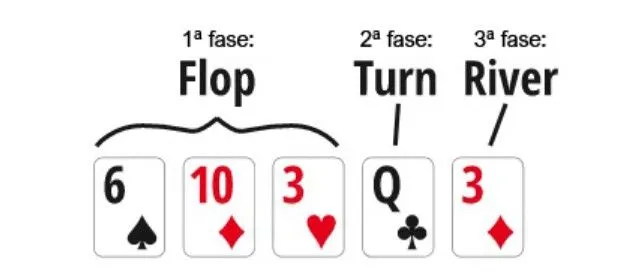
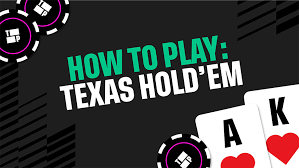
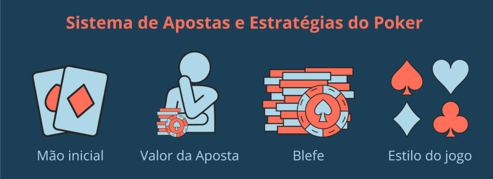
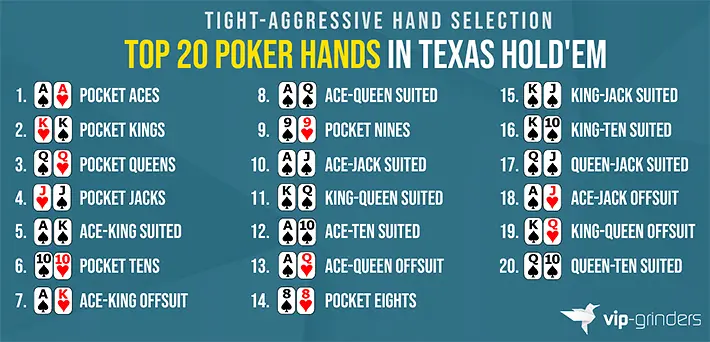
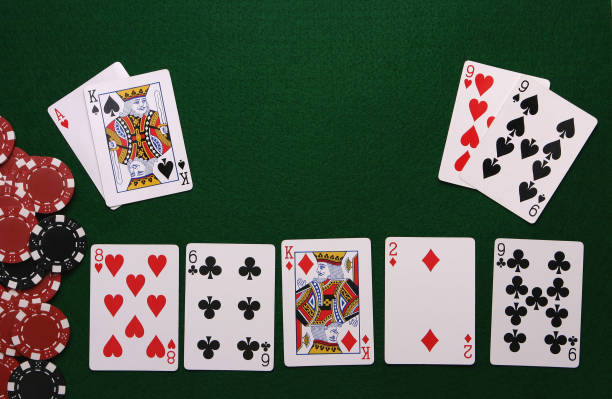

Flop, Turn e River: Jogando de Forma Lucrativa em Cada Fase
Após o pré-flop, o jogo se desenvolve em três fases cruciais: flop, turn e river. No flop, o jogador deve avaliar se conectou bem com as cartas comunitárias e decidir entre uma postura agressiva, apostando para extrair valor ou proteger a mão, ou passiva, controlando o tamanho do pote. No turn, as decisões se tornam mais caras e exigem maior precisão, pois novas possibilidades de combinações surgem. Já no river, não há mais cartas a serem reveladas, e a estratégia gira em torno de valor máximo ou blefe bem calculado. Jogar de forma lucrativa significa adaptar-se aos diferentes perfis de jogadores — agressivos, passivos, tight ou loose — explorando seus erros e ajustando o próprio estilo conforme a dinâmica da mesa.
- AVALIAÇÃO DE FORÇA DE MÃO
- DECISÃO ENTRE APOSTA(BET) E CONTROLE DE POTE
- IDENTIFICAÇÃO DE DRAWS
- LEITURA DE TEXTURA DE BOARD
Como Aprender a Jogar Poker Texas Hold’em
Aprender a jogar Poker Texas Hold’em envolve muito mais do que conhecer as regras básicas do jogo. O processo passa pelo entendimento das mãos iniciais, das posições na mesa, das probabilidades e, principalmente, da tomada de decisão em diferentes situações. O ideal é iniciar com mesas de limites baixos, estudar conteúdos teóricos, analisar mãos jogadas e praticar constantemente. Com o tempo, o jogador desenvolve leitura de adversários, controle emocional e disciplina, fatores essenciais para evoluir de iniciante para um jogador consistente e lucrativo.
- ANÁLISE DE MÃOS JOGADAS
- APRENDIZADO PROGRESSIVO POR NÍVEIS
- ESTUDO CONTÍNUO E PRÁTICA CONSTANTE
- GESTÃO EMOCIONAL E DISCIPLINA
Sistema de Apostas e Estratégias no Poker Texas Hold’em
No Poker Texas Hold’em, o sistema de apostas é dividido em quatro rodadas principais: pré-flop, flop, turn e river. Em cada etapa, os jogadores podem optar por pagar, aumentar ou desistir da mão, decisões que devem ser tomadas com base na força das cartas, posição na mesa, tamanho do pote e comportamento dos adversários. Estratégias eficientes envolvem saber quando ser agressivo, utilizando apostas e aumentos para pressionar oponentes, e quando adotar uma postura mais conservadora para evitar perdas desnecessárias. A leitura de jogo, o controle emocional e a gestão adequada de fichas (bankroll) são fatores essenciais para manter consistência e vantagem a longo prazo.
- CONTROLE DE RISCO E VARIANCIA
- ENTENDIMENTO DE APOSTAS
- PRESSÃO SOBRE OS ADVERSÁRIOS
- USO ESTRATÉGICO DE BET SIZING
Como Jogar com as 20 Melhores Mãos do Poker Texas Hold’em
As 20 melhores mãos iniciais do Texas Hold’em, como pares altos (AA, KK, QQ), combinações fortes como AK, AQ e AJ do mesmo naipe, além de pares médios(pocket pairs), oferecem maior potencial de vitória e devem ser jogadas de forma estratégica. Com essas mãos, o ideal é adotar uma postura mais agressiva, entrando no pote com aumento para reduzir o número de adversários e aumentar o valor do pote quando se tem vantagem. No entanto, é fundamental considerar a posição na mesa e as ações dos outros jogadores, pois mesmo mãos fortes podem perder valor em situações desfavoráveis ou contra múltiplos oponentes.
- AGRESSIVIDADE PRÉ-FLOP
- IMPORTANCIA DE POSIÇÃO NA MESA
- PARES ALTOS E MÃOS PREMIUM
- REDUÇÃO DE NÚMERO DE OPONENTES NA MÃO
Percepção das Possíveis Combinações e Hierarquia das Mãos
Compreender as possíveis combinações de cartas e sua hierarquia é um dos pilares do sucesso no Poker Texas Hold’em. Desde o par simples até o cobiçado royal flush, cada mão possui um valor específico que determina o vencedor em um confronto. Durante a partida, é essencial analisar as cartas comunitárias e imaginar quais combinações podem estar disponíveis tanto para você quanto para seus adversários. Essa habilidade, conhecida como leitura de range, permite antecipar jogadas, evitar armadilhas e identificar oportunidades de apostas ou blefes, aumentando significativamente as chances de tomar decisões mais precisas e lucrativas.

- ANTECIPAÇÃO DE JOGADAS
- HIERARQUIA DE MÃOS
- LEITURA DE COMBINAÇÕES
- RANGES E PROBABILIDADE
Análise de Board e Estratégia: AhKs x 9h9s
Em um exemplo de board com flop 8h 6c Kd, turn 2d e river 9c, temos o confronto entre AhKs e 9h9s. Nesse cenário, o jogador com AhKs forma um par de Reis com kicker Ás, enquanto o jogador com 9h9s acerta uma trinca no river, vencendo a mão. A mão perdedora (AhKs) poderia ter adotado uma abordagem mais cautelosa após o turn, reduzindo apostas diante da possibilidade de pares médios ou combinações escondidas do adversário, especialmente fora de posição. Já a mão vencedora (9h9s) deveria buscar extrair o máximo de valor, utilizando apostas progressivas e armadilhas sutis, principalmente se estivesse em posição, permitindo controlar o pote e induzir apostas do oponente. A vantagem de posição, nesse caso, é determinante para maximizar ganhos e minimizar riscos, reforçando a importância do jogo estratégico em cada posição.
- MAXIMIZAR GANHOS
- VANTAGEM DE POSIÇÃO
- INTERPRETAÇÃO DE RANGE ADVERSÁRIO
- MINIMIZAR PERDAS